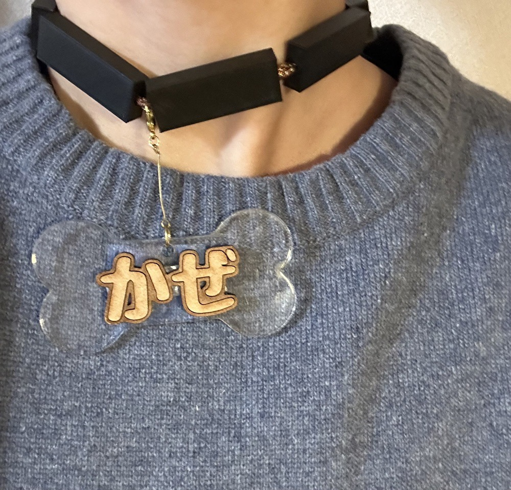

タイトル【ドッグタグ風 かぜチョーカー】
◎テーマ
風邪気味のときや肌が荒れてしまった時などマイナスなことが起こった時にはなにかプラスのことが起きてほしい。そこで私たちの班は風邪だということを周囲の人にアピールして親切にしてもらう作戦を考えました。
◎構想
どういう形で周囲の人に風邪だとアピールしようか考えた時に浮かんだのがアクセサリーにすることです。最初は首からかけるネックレスにして、鎖を3Dプリンターでつくろうとしましたが難しすぎて断念。結局チョーカーという形にしました。
◎チョーカーの作り方
首の形に成形するのはかなり難しい上に、自分専用になってしまうので小さなパーツを繋げてチョーカーを作ることにしました。最初は去年の先輩が作っていた第2の手から着想してワイヤーでパーツを繋げようと考えましたが、思ったようにいかなかったのでリボンで繋げることにしました。リボンの端は解けないように火で炙ってます。
◎チャーム
“かぜ”の文字はチョーカーからぶら下げられるようにします。揺れることでさらに多くの人の目につくでしょう。土台はアクリル板で作り、文字はMDFで作成しました。家にあったマルカンとかを適当に付けてチャームの完成！
先をロブスターフックにしたのでキーホルダーにも出来ます。
◎完成、、？
リボンにチャームを付けていざ装着！！
なんか、、かわいくない、、、、( ; ; )
◎改良
あまりにも可愛くなかったので改良。病人アピールだけでなく可愛さアピールも欠かせません。まず白い3Dパーツを黒に塗装！絵の具の乗りが悪かったので2度塗りしました。
次に土台のアクリルパーツを犬の骨型に作り直しました。これでより犬の首輪風に！
完成！！！


前に比べたら可愛くなってる(ദ്ദി^._.^) ぎり日常使いできる。かもね。
前に比べたら可愛くなってる(ദ്ദി^._.^) ぎり日常使いできる。かもね。
XBPトップページ